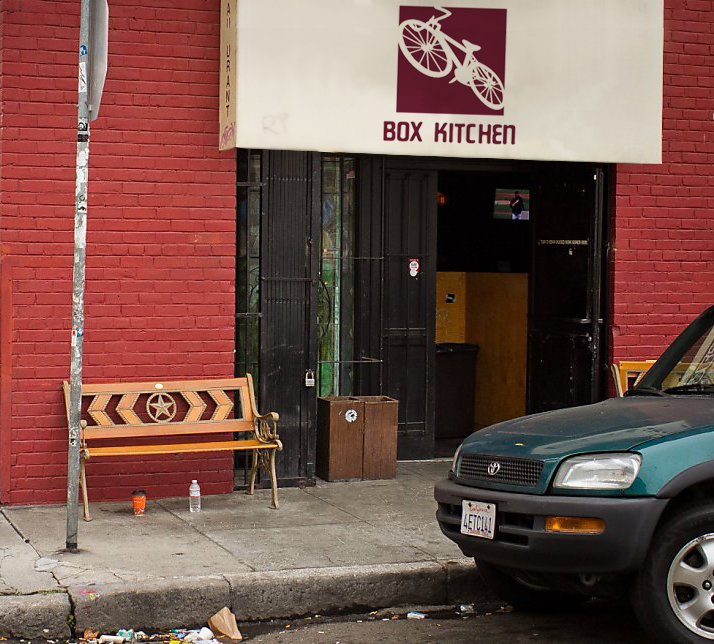
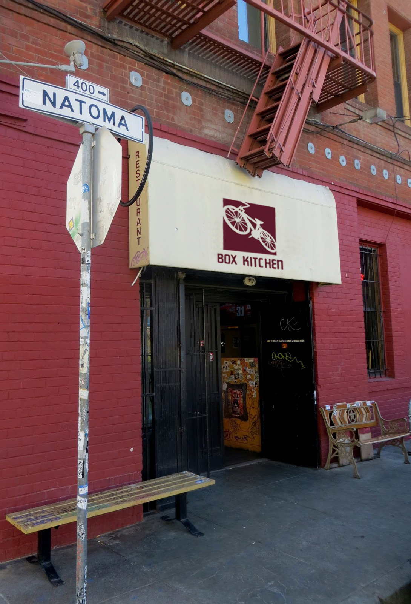
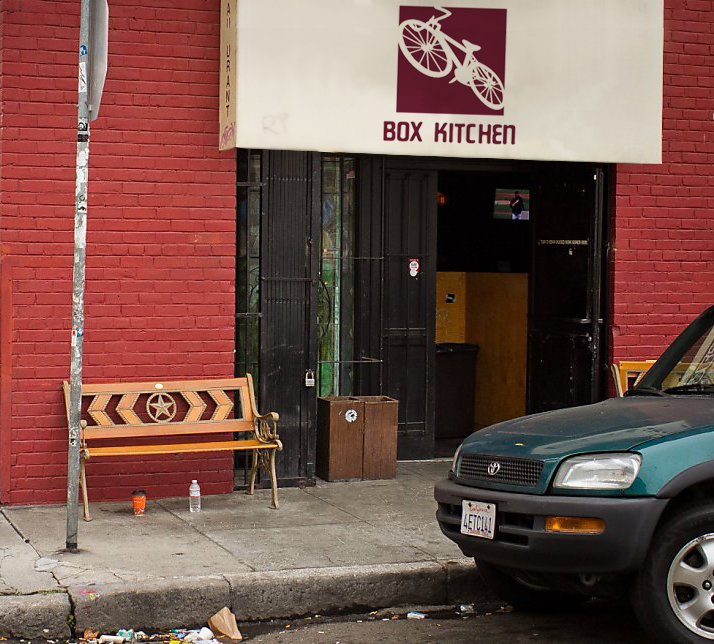
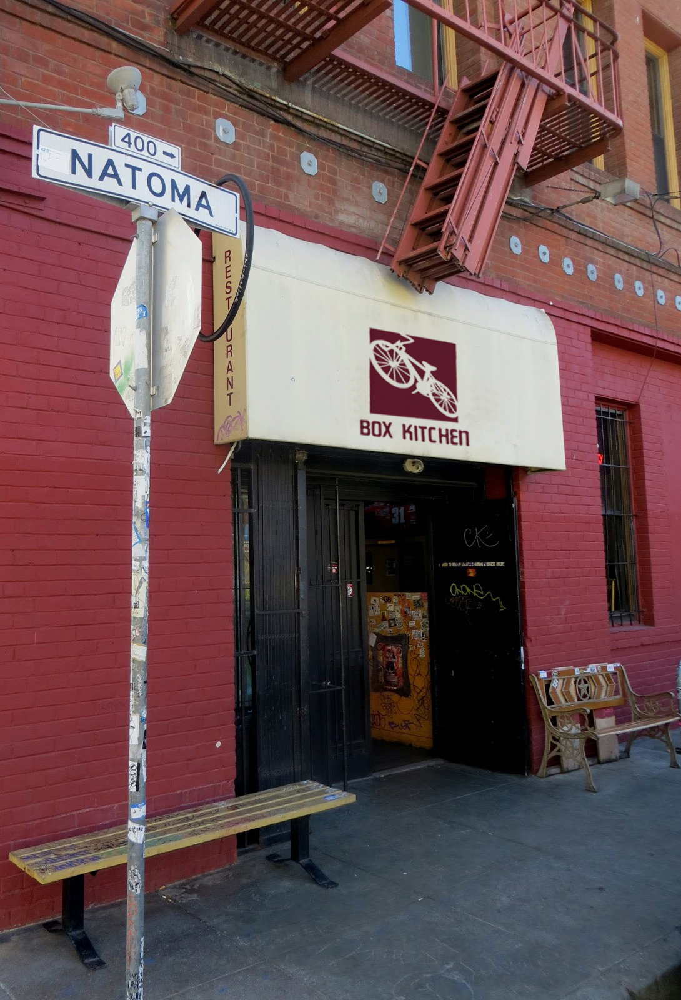

Box Kitchen is tucked inside Tempest, a dive bar
in San Francisco. Hanging from the ceiling are
bicyles which many people don’t notice on their
first visit. The bar itself is hidden thus making
it a place for regulars and locals. The bicycle is a reference that only regulars would understand.
The walls of Tempest are littered with stickers. The packaging of Box Kitchen is made to reflect the presence and intimacy of the regulars. The patterns on the packaging are made from stickers found from Tempest.

 


